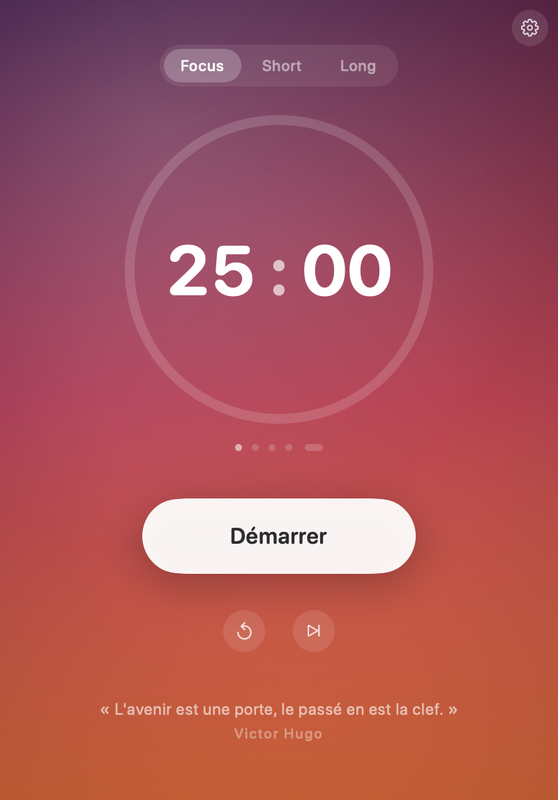

Rester concentré,
une session à la fois
25:00

Compte à rebours dans l'encoche
Cycle Pomodoro automatique
Dégradé qui suit l'heure
Tout au clavier
Questions
macOS refuse d'ouvrir Focus
L'app est signée localement, donc inconnue d'Apple : au premier lancement macOS propose de la mettre à la corbeille. Cliquer « Terminé ».
Puis ouvrir Réglages Système > Confidentialité et sécurité, descendre tout en bas, cliquer « Ouvrir quand même » et confirmer. C'est à faire une seule fois.
Quelle configuration ?
macOS 14 Sonoma minimum. Le binaire est universel : Apple Silicon et Intel.
Et sur un Mac sans encoche ?
La pastille devient un petit bandeau arrondi flottant juste sous la barre des menus. Le comportement est identique.
C'est payant ?
Non, c'est gratuit. Le code source reste privé, ce dépôt public ne porte que le binaire et cette page.